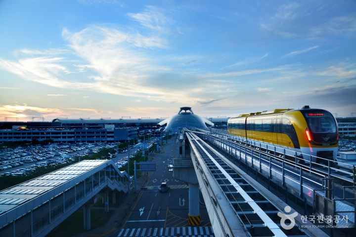
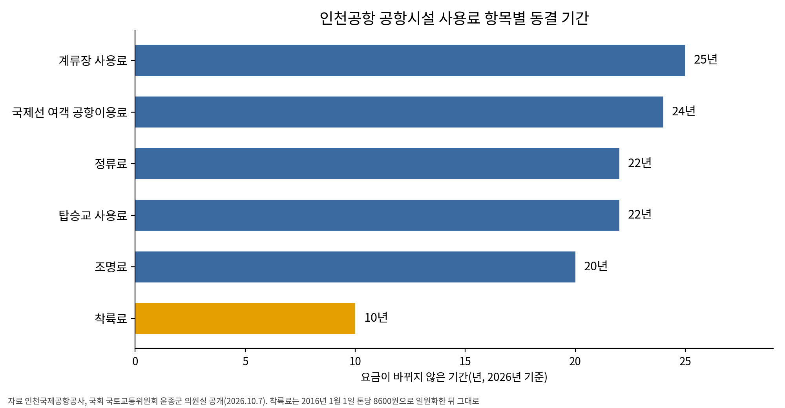
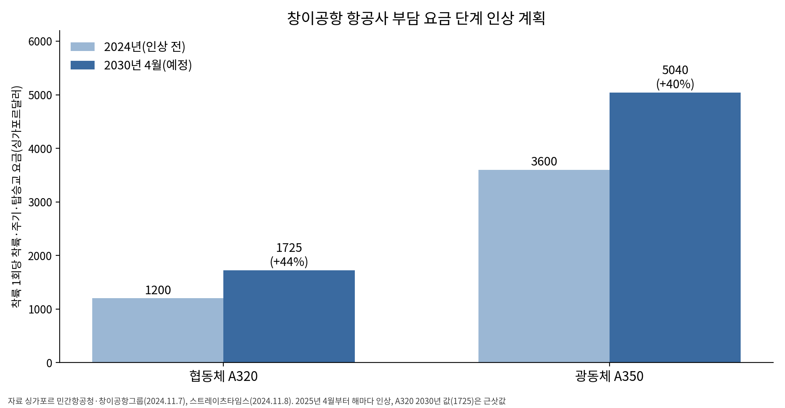

착륙료 10년·계류장 25년 묶은 인천공항, 싼 값이 항공사를 붙잡는가
- 착륙료 톤당 8600원, 2016년 이후 그대로
- 창이, 항공사와 협의해 착륙·주기료 40% 단계 인상
- 항공사, 값과 수요와 운영을 함께 따져 공항 골라
인천공항 국제선 착륙료는 톤당 8600원이다. 2016년 1월 이 값으로 요금을 하나로 묶은 뒤 10년째 그대로다. 계류장 사용료는 25년, 정류료와 탑승교 사용료는 22년, 조명료는 20년째 같은 값이다. 국회 국토교통위원회 윤종군 의원실이 10월 7일 공개한 인천국제공항공사 자료다.

공항 손님은 여객만이 아니다. 활주로에 내리고 계류장에 서고 탑승교를 붙이는 항공사가 공항 첫 고객이다. 인천은 이 고객에게 받는 값을 오래 묶어 왔다. 값을 묶은 공항이 곧 항공사가 찾는 공항인지 따져 볼 때다.
10년 묶인 착륙료, 25년 묶인 계류장
공사는 2016년 1월 국제선 착륙료를 손봤다. 항공기 무게에 따라 톤당 단가를 달리 받던 제도를 없애고 모든 기종에 8600원을 매겼다. 그 뒤 국제선 착륙료는 한 번도 바뀌지 않았다.
다른 항목은 더 오래 묶였다. 계류장 사용료는 25년째 같은 값이다. 정류료와 탑승교 사용료는 22년, 조명료는 20년 동안 그대로였다. 활주로에서 게이트까지 항공사가 내는 요금이 통째로 멈춰 있다.
공사는 오랜 동결로 물가 상승분을 반영하지 못했다고 분석했다. 달러로 사용료를 내는 외국 항공사는 환율이 오르면서 사실상 요금을 깎은 효과를 봤다. 원화 값이 떨어진 만큼 더 적은 달러로 같은 요금을 냈기 때문이다.
정부는 올해 부담을 더 덜어 줬다. 김윤덕 국토교통부 장관은 4월 20일 국내 항공사 대표들과 간담회를 열고 5월부터 공항시설 사용료 납부를 미뤄 주기로 했다. 중동 전쟁으로 항공유값과 환율이 뛰자 내놓은 조치다. 코로나19 때처럼 깎아 주지 않고 내는 때만 늦췄다.

창이는 올리면서 항공사와 마주 앉았다
싱가포르 창이공항은 반대 길을 간다. 싱가포르 민간항공청(CAAS)과 창이공항그룹(CAG)은 2024년 11월 7일 항공사 요금 인상안을 내놨다. 착륙·주기·탑승교 요금을 2025년 4월부터 2030년까지 해마다 나눠 40% 남짓 올린다.
A320 같은 협동체는 착륙 1회 요금이 약 1200싱가포르달러(약 125만원)에서 2030년 약 1725싱가포르달러(약 180만원)로 오른다. A350 같은 광동체는 3600싱가포르달러(약 375만원, 10월 12일 환율)에서 5040싱가포르달러(약 526만원)가 된다.
올리는 방식이 눈에 띈다. 당국은 국제항공운송협회(IATA)와 주요 항공사와 협의했다고 밝혔다. 그 의견을 받아 2025년 4월부터 9월까지 인상분 절반을 항공사에 돌려주기로 했다. 창이는 코로나19 때인 2020년 4월부터 2022년 11월까지 사용료를 묶었다가 다시 올렸다.
더 걷은 돈은 시설로 돌아간다. 창이는 6년 동안 30억싱가포르달러(약 3조1000억원)를 들여 제1~4터미널을 손본다. 수하물 처리 시스템과 터미널을 잇는 스카이트레인을 새것으로 바꾼다. 항공사가 더 낸 돈이 수하물과 환승 동선으로 돌아오는 구조다.

항공사는 값만 보고 공항을 고르지 않는다
항공사가 공항을 고를 때 값이 얼마나 무거운지는 연구마다 다르다. 싱가포르 난양공대 등 연구진은 2020년 국제 학술지에 낸 연구에서 중국과 한국 저비용항공사 임원 28명에게 공항 선택 기준을 물었다. 공항 사용료가 1위였고 공항 운영 성과와 성장 기회가 뒤를 이었다.
유럽 조사는 결과가 달랐다. 영국 연구진이 2005년 유럽 저비용항공사 8곳을 조사했더니 저비용 항공 수요가 1위였고 공항 사용료는 4위였다. 연구진은 항공사 특성에 따라 우선순위가 달라진다고 봤다. 공항이 항공사마다 다른 조건을 내놓아야 한다고 권했다.
두 결과를 겹쳐 보면 값은 출발점일 뿐이다. 단거리 노선을 주로 띄우는 저비용항공사는 값에 민감하다. 그러나 손님이 없는 공항에 싸다는 이유만으로 들어가는 항공사는 없다. 값이 낮아도 슬롯이 모자라고 게이트에서 오래 기다리면 항공사는 그 비용을 다른 곳에서 치른다.
값을 묶기보다 항공사와 마주 앉아야
국제민간항공기구(ICAO)는 공항 사용료 정책 지침(Doc 9082)에서 원칙 네 가지를 권고한다. 항공사를 차별하지 않고, 원가와 연동하고, 투명하게 정하고, 이용자와 협의하라는 것이다. 요금이 싸야 한다는 원칙은 없다. 원가와 투명성과 협의가 기준이다.
인천은 값을 묶는 데 익숙하다. 공사는 용역 결과를 토대로 사용료 체계 개편 방향을 검토하고 있다. 내부 방침을 정한 뒤 정부와 협의하겠다고 밝혔다. 인상 폭과 시점은 아직 확정되지 않았다. 협의 상대에 항공사가 얼마나 깊이 들어가는지가 관건이다.
항공사가 바라는 편의는 값만이 아니다. 인천은 올해 하계 운항 일정부터 시간당 슬롯을 78회에서 80회로 늘렸다. 공사는 하루 평균 정기편이 지난해 여름보다 최대 9.1% 많은 1260회 이상이 될 것으로 내다봤다. 활주로에 내릴 시간과 게이트에 붙일 탑승교가 항공사 원가를 줄인다.
값을 묶으면 당장은 항공사가 반긴다. 그러나 묶인 값으로 낡은 시설을 바꾸지 못하면 그 비용은 지연과 혼잡으로 항공사에 돌아온다. 창이는 올리되 항공사와 마주 앉고 걷은 돈을 시설로 돌려준다. 인천도 값을 정하는 자리에 항공사를 앉혀야 한다.
이 기사는 인공지능을 활용해 작성했습니다. 사실관계는 저자가 확인했습니다.
참고문헌
기관 자료
- 항공정보간행물(eAIP), 「GEN 4.1 AERODROME CHARGES」, 국토교통부 항공정보관리, 2024년 11월 27일 AIRAC. https://aim.koca.go.kr/eaipPub/Package/2024-11-27-AIRAC/html/eAIP/KR-GEN-4.1-ko-KR.html
- International Civil Aviation Organization, 『ICAO's Policies on Charges for Airports and Air Navigation Services』(Doc 9082) 제10판, 2024년. https://icao.int/publications/Documents/9082_10ed_en.pdf
- Civil Aviation Authority of Singapore, "Changi Airport to Invest S$3 Billion over Next Six Years to Strengthen Singapore's Position as a Global Air Hub", 2024년 11월 7일. https://www.caas.gov.sg/resources/media-and-publication/newsroom/changi-airport-to-invest-s3-billion-over-next-six-years-to-strengthen-singapores/
연구 논문
- Warnock-Smith, D., & Potter, A., "An exploratory study into airport choice factors for European low-cost airlines", 『Journal of Air Transport Management』 11(6), 2005년 11월, pp.388-392. https://doi.org/10.1016/j.jairtraman.2005.05.003
- Loh, H. S., Yuen, K. F., Wang, X., Surucu-Balci, E., Balci, G., & Zhou, Q., "Airport selection criteria of low-cost carriers: A fuzzy analytical hierarchy process", 『Journal of Air Transport Management』 83, 2020년 3월, 101759. https://doi.org/10.1016/j.jairtraman.2019.101759
언론 보도
- "인천공항 개항 16년만에 첫 착륙료 인하…사용료 개편", 서울신문(연합뉴스), 2016년 1월 3일. https://www.seoul.co.kr/news/society/2016/01/03/20160103800122
- 경향신문, "[궁금한 공항이야기] '착륙료가 얼마인가요'…항공사가 공항에 내는 요금은", 2023년 10월 14일. https://www.khan.co.kr/article/202310140800001
- Kok Yufeng, "Changi Airport to raise passenger and airline fees over six years to fund $3b improvement plans", The Straits Times(Asia News Network), 2024년 11월 8일. https://asianews.network/?p=175074
- Andrew, "Singapore Changi Airport hiking passenger fees to fund S$3 billion investment", Mainly Miles, 2024년 11월 8일. https://mainlymiles.com/2024/11/08/singapore-changi-airport-hiking-passenger-fees-to-fund-investment/
- 홍찬선, "인천공항, 올 하계 항공기 운항 9.1% 증가…'45초당 1대' 이·착륙", 뉴시스, 2026년 3월 30일. https://www.newsis.com/view/NISX20260330_0003569907
- 이병기, "인천공항, 여름 항공기 운항횟수 늘려 인천-지방 연계 강화", 경기일보, 2026년 3월 30일. https://www.kyeonggi.com/article/20260330580276
- "항공사 공항시설 사용료, 내달부터 한시 유예", 아시아경제, 2026년 4월 20일. https://view.asiae.co.kr/article/2026042017422311864
- "국토부, 항공업계 지원책 마련‥5월부터 공항사용료 납부 한시 유예", MBC, 2026년 4월 20일. https://imnews.imbc.com/news/2026/econo/article/6816660_36932.html
- "정부, 내달부터 항공사 공항사용료 납부 유예…'고정비 부담 완화 기대'", 뉴시스, 2026년 4월 21일. https://www.newsis.com/view/NISX20260421_0003600633
- 이지현, "공항료·슬롯 회수 유예…항공사, '현금 유동성·운항권' 동시 방어", 글로벌이코노믹, 2026년 4월 23일. https://www.g-enews.com/article/Industry/2026/04/202604231541317683ea14faf6f5_1
- 김현경, "'1만7천원→2만2천원' 24년간 묶였던 인천공항 이용료…인상 카드 꺼냈다", 한국경제TV, 2026년 10월 7일. https://www.wowtv.co.kr/NewsCenter/News/Read?articleId=A202610070054
- 김진홍, "인천공항 국제선 이용료 5000원 오르나…24년 동결 요금 인상 검토", 경북매일, 2026년 10월 7일. https://www.kbmaeil.com/article/20261007500238
- Lee Young-keun, "Incheon Airport pushes first passenger fee increase in 24 years", Korea JoongAng Daily, 2026년 10월 7일. https://www.koreajoongangdaily.com/business/incheon-airport-pushes-first-passenger-fee-increase-in-24-years/12908555
- 하영수, "24년 만에 오른다…인천공항 이용료 5천원 인상 검토", CBC뉴스, 2026년 10월 8일. https://www.cbci.co.kr/news/articleView.html?idxno=613151
- "원/달러 환율, 7.7원 내린 1335.1원", 머니투데이, 2026년 10월 12일. https://www.mt.co.kr/economy/2026/10/12/2026101215440045026
- Investing.com, 「SGD/KRW 싱가폴 달러 원」, 2026년 10월 12일 조회. https://kr.investing.com/currencies/sgd-krw
사진 출처
- [사진1] Simply Aviation, "02-NOV-2023 - KC910 ICN-ALA (EI-KEB - B767-300) (03) (cropped).jpg", 위키미디어 공용, CC BY-SA 4.0, 2023년 11월 2일 촬영. https://commons.wikimedia.org/wiki/File:02-NOV-2023_-_KC910_ICN-ALA_(EI-KEB_-_B767-300)_(03)_(cropped).jpg
- [사진2] Bahnfrend, "Singapore Airlines Airbus A350 9V-SHE Singapore 2023 (01).jpg", 위키미디어 공용, CC BY-SA 4.0, 2023년 11월 3일 촬영. https://commons.wikimedia.org/wiki/File:Singapore_Airlines_Airbus_A350_9V-SHE_Singapore_2023_(01).jpg
- [도표1] 경세제민 AI·경제연구소 작성, 자료 인천국제공항공사(윤종군 의원실 2026년 10월 7일 공개)
- [도표2] 경세제민 AI·경제연구소 작성, 자료 싱가포르 민간항공청·창이공항그룹(2024년 11월 7일 발표)
_(03)_(cropped).jpg){kind=link}
.jpg){kind=link}